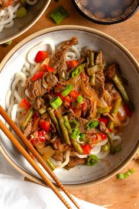

A traditional Japanese dish consisting of vinegared rice accompanied by various ingredients such as seafood, vegetables, and sometimes tropical fruits.
€18.00
Beef Steak Tagalog
A Filipino beef stew made with tender beef slices cooked in a savory sauce with soy sauce, garlic, and onions, often served with vegetables.
€22.00
Kabuli Pulao
An Afghan dish consisting of rice cooked with spices, raisins, and carrots, often accompanied by tender pieces of lamb or beef.
€14.00
Tandoori Chicken
Chicken marinated in a mixture of yogurt and spices, then cooked in a tandoor (clay oven) to achieve a smoky flavor and tender texture.
€18.00
Vada Pav
A popular Indian street food consisting of a spicy potato fritter (vada) served in a bun (pav) with chutneys and spices.
€10.00
Haitian Spaghetti
A Haitian-style spaghetti dish cooked with a flavorful tomato sauce, bell peppers, onions, and spices, often served with a side of fried plantains.
€12.00
Russian Borscht
A hearty beetroot soup with a tangy flavor, often garnished with sour cream and fresh herbs. It can include meat, vegetables, and sometimes beans.
€16.00

Lagman
A Central Asian noodle dish with a rich broth, vegetables, and meat. The noodles are usually hand-pulled, giving the dish a unique texture.
€14.00
Chicken Biryani
A fragrant and flavorful rice dish cooked with chicken, aromatic spices, and herbs. Often garnished with fried onions and served with raita or salad.
€16.00
Fresas con Crema
A sweet Mexican dessert made with fresh strawberries mixed with a creamy sauce of sour cream, sugar, and vanilla. Served chilled.
€8.00
Jajang Tteokbokki
A Korean dish featuring chewy rice cakes in a savory black bean paste sauce, combined with vegetables and sometimes meat.
€14.00
Lotus Cheesecake
A creamy cheesecake with a Lotus Biscoff cookie crust, providing a delightful crunch and caramel flavor to the dessert.
€12.00
Roohafza Ladoo
A sweet Indian treat made with Roohafza syrup, semolina, and nuts, formed into round balls and flavored with cardamom.
€10.00
Semiyan Payasam
An Indian dessert made with vermicelli cooked in milk and flavored with cardamom, sugar, and garnished with nuts and raisins.